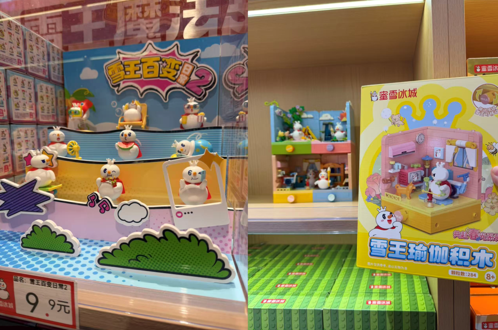
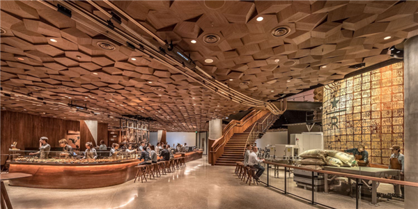
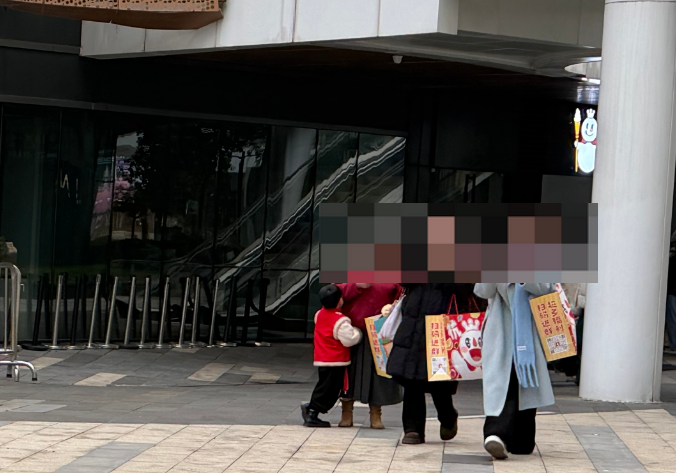

是的，作為一個茶飲店，他們直接承包了一棟樓，作為杭州旗艦店，面積近 700㎡……
不僅如此，在過去的 2025 年，蜜雪冰城開了十多家旗艦店，從鄭州開到了杭州、成都、重慶、青島、石家莊、西安、武漢等等，到處 “ 攻打 ” 省會。
説起來，近幾年茶飲品牌還都有點一反常態。
以前是複製粘貼開小店，現在轉向發力大店、旗艦店。
這究竟是錢賺太多沒處花，還是是行業遇到瓶頸了？乾脆咱認真研究研究。

可能有人還沒逛過蜜雪的這旗艦店，先來一起簡單感受下。
一共兩層樓，一層賣冰淇淋、奶茶、咖啡等飲食，均在 10 元內，有限定款飲品。

二層賣文創周邊跟小零食，不少 9.9 元的盲盒，大一些的盲盒跟積木在 30 元左右，也有上百元的貴貨。

小零食區則過成了 2 元店的樣子，黃油雞蛋卷、撈汁豆腐都只要 1 元，脱骨鳳爪 3 元，感覺只要進來了，很難空着手出去。
通常茶飲店用工，少則3、4人，多則7、8人，這類規模明顯沒法維持兩層樓的運轉。
根據世超的觀察，旗艦店內每層都有 10 多名員工，二樓除了收銀人員，還有負責巡視、解答、補貨的值守員工。

單一的售賣商品的門店咱都懂，追求的是效率最大化，最小面積、最少人工、出餐飛快，拿了你趕緊走。
而豪擲千金的旗艦店呢，玩得則主要是一個敍事，講故事、造場景、要沉浸。
這事早在 9 年前就有人嘗試了，大家的思路也大差不差。
2017 年，星巴克就在上海南京西路開了個 2700 平米的臻選烘培工坊，搬來了咖啡烘焙流水線，還砸錢做了 N 多細節，比如頂部設計了 “ 咖啡交響管 ” ，烘培好的生豆通過管道乒乒乓乓的最後掉落到吧枱的儲豆罐裏。
2019 年奈雪的茶在深圳拿下 1000 平，推出奈雪夢工廠，賣烘焙、茶飲、咖啡，甚至還賣精釀、西餐、零售產品。
霸王茶姬有超級茶倉，主打沉浸式茶文化體驗。
喜茶有 LAB 店，主打東方禪意，也是茶飲、蛋糕、冰淇淋一應俱全。

星巴克臻選烘培工坊
看着這些門頭跟設計後你可能會有疑惑，這得燒多少錢啊……
嗯，根據報道，蜜雪冰城杭州旗艦店投入 800 萬，深圳奈雪夢工廠此前投入近 2000 萬，光看數字，怪敗家的，這是圖啥呢？
回看過去，茶飲店們的財富密碼曾經簡單粗暴，搞好供應鏈，依靠高度標準化 + 加盟模式，瘋狂複製粘貼，三步走，然後在全國的大街小巷裂變。
但現在的茶飲店，紅火到有些喪心病狂……
這是我們公司周圍的商圈，就這條街，有 9 家飲品店，店與店之間最遠的步行距離就 150 米左右。

而稍微再抬下腿，一街之隔，還有喜茶、瑞幸、coco。
在全方位無死角的加密之下，茶飲行業現在是店鋪挨着店鋪，純純肉搏戰啊這是！
而且吧，這場白刃戰短期內還停不下來。
你不開，他來開，為了搶份額，截客流，只能繼續拓店，哪怕附近已經有同品牌門店，哪怕再開下去就是自己人打自己人，品牌也要硬着頭皮繼續加密。
市場還在漲的時候，這套打法沒毛病。
但一旦接近天花板，問題就來了：店越開越多，客流被稀釋，單店營收被稀釋，加盟商回本週期拉長，撐不住的開始關店。
根據窄門餐眼數據，一年內奶茶店新開十萬多家，非常喜人的數據，但淨增長是負近三萬家。
裏面的人想出去，外面的人想進來，現實版的圍城。

但在資本市場上，品牌不能停下腳步，只能開始八仙過海，過往已經嘗試過很多招數了，比如瘋狂聯名吸客流，賣周邊、做零售拉高客單價，搞IP、玩抽象創造年輕人喜歡的文化價值。
旗艦店妙就妙在，它有點像把這些招數打包在一起的全家桶形態。
你可以在裏面放聯名、賣周邊、加強IP，也可以做城市限定款來吸引遊客打卡。
甚至直接把店本身變成一個景點，在社交平台上引發傳播。

乃至把顧客變成活廣告牌。
這麼説吧，世超在店內就買了四個盲盒，但是都給了巨大的袋子，走出店門口我回頭看了下，好傢伙，幾乎周圍每個人都拎着一張雪王的大臉。

在激烈的行業競爭下，旗艦店的風就這樣颳了起來，但旗艦店到底是不是制勝妙招，或者直白點，大店投入不菲，這 800 萬砸下去，能不能賺回來？
短期來看，局勢似乎還不錯。
除了擺在枱面的收益之外，蜜雪冰城等知名茶飲品牌在成本上也有優勢。
像這種巨型旗艦店的成本大頭無外乎就是租金和裝修。
然而像蜜雪這種自帶流量的品牌，商場往往會給到優惠招商方案，像更低的租金啦、免租期、裝修補貼什麼的，一套下來能省不少錢。
一位杭州的連鎖酒吧老闆告訴世超：熱門商圈會有品牌的初篩，沒有名氣的店鋪進不去，進去之後大多數都是正常租金，然後好的品牌會有裝修補貼，這個就看品牌的實力了，裝補高的能把店鋪裝修覆蓋掉。
更何況作為旗艦店，人也不用非找特核心的地段，早就開業的時候，就有不少網友調侃，説雪王拯救低迷的西溪銀泰來了。
當然，咱們也不知道，到底是雪王的品牌魅力真無可匹敵，還是開業打卡送冰淇淋的鈔能力更有誘人……

再加上蜜雪冰城本身就是做供應鏈生意的，在設備和物料上也自帶優勢。
不過，長期來看，就有點説不好。
前面提到的奈雪夢工廠，2019 年在深圳開業時，排隊景象比現在的蜜雪旗艦店有過之而無不及，開業僅 3 天，業績就衝破了 100 萬大關。但 2022 年，這家夢工廠已經查無此人了。
開業即巔峯，是不少茶飲旗艦店的宿命。
因為旗艦店的流量，靠的是 “ 新鮮感 ” ，開一家旗艦店容易，開十家店也不難，真正的難點在於，如何持續整活和運營，一直保持熱度。
當然，對於整活能手、抽象聖體雪王來説，這可能正是它所擅長的。
但對於所有入局者來説，開旗艦店不是終點，而是又一波豪賭實驗。

這兩年，零售行業非常有趣。
以空間為主的，瘋狂擁抱減法。早先瑞幸做快取店胖揍星巴克，如今餐飲店越開越小，往衞星店發展，最近，宜家砍掉了 7 家大店改開小型門店，都在精細算賬，在對性價比。
講究效率為王的，卻開始做加法。靠批量複製小店起家的茶飲們，走向重資產、大空間。
但背後邏輯其實並不矛盾，大家都在從單一模式走向組合打法。
世超感覺，未來這種趨勢一定還會更明顯。
日常門店繼續小、繼續密、繼續卷效率，旗艦大店則越做越精緻，像城市地標一樣，專門來抓取用户的注意力。
也許，這就是：
開小店是為了生活，開大店是為了造夢。